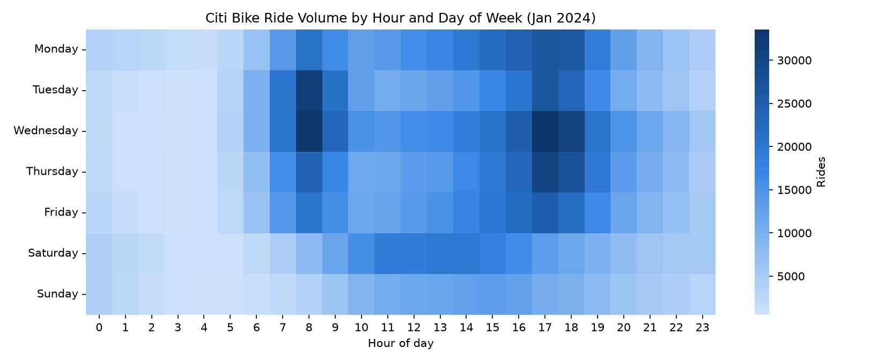
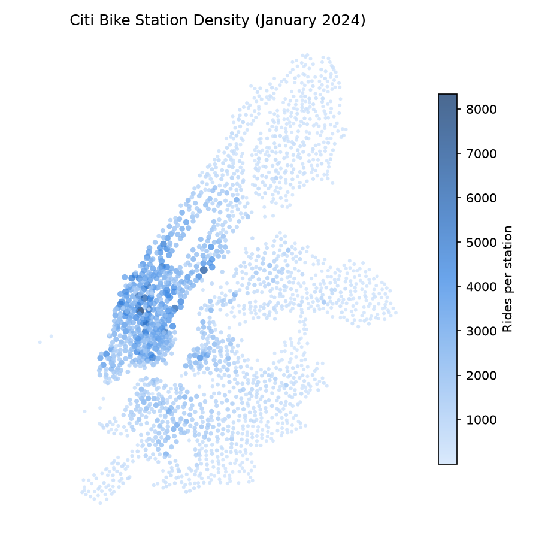

NYC Transportation Analysis
An end-to-end look at NYC's Citi Bike system: cleaning a month of raw trip data, then reading the patterns out of it two ways — when the system gets busy, and where. Built on January 2024's public trip data (~1.9M rides) and NYC DOT's bike lane network.

Rides broken out by hour of day and day of week — the weekday commute rush shows up as two sharp columns; weekends spread out into one broad midday window instead.
View the heatmap →
An interactive map of station-level ride density against the city's actual bike lane network — scrub through the hours to watch the commute rush move across the city.
Explore the map →The trip data comes from Citi Bike's public System Data feed, cleaned with the same rules throughout the notebook and both site pages: duplicate rides, out-of-month spillover at the file's edges, and 24h+ checkouts (Citi Bike's own definition of a lost/stolen bike, not a real ride) are all removed before anything gets counted.
The bike lane network is pulled live from NYC DOT's New York City Bike Routes dataset on NYC Open Data.
CitiBike_Analysis.ipynb — the pandas/matplotlib/seaborn exploratory analysis this site is built on.scripts/ — the data pipeline that turns a month of raw trip data into everything these pages render.